登場角色
序章 沙語綠洲
第一章 駝鈴與戒指
第二章 岩谷伏擊
第三章 會呼吸的遺跡
第四章 R-0913
第五章 無名神的心跳
第六章 鐵手
第七章 握緊
後日談
CHARACTERS登場角色
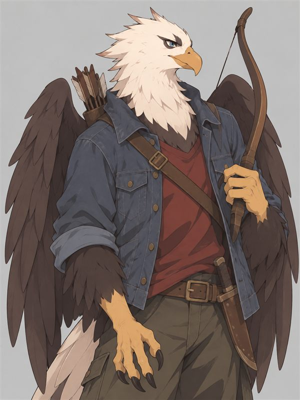
Ventus Caeli（天風）
白頭海鵰模樣的鳥人，藍眼沉靜，穿丹寧外套、背長弓。從空中之城下到地面，想親眼看清每件事背後的動機，不輕易替人貼上善惡。
專長 觀言辨意、觀兆導引
必殺技 勁風箭
目標 心靈煉金，成為部族的典範
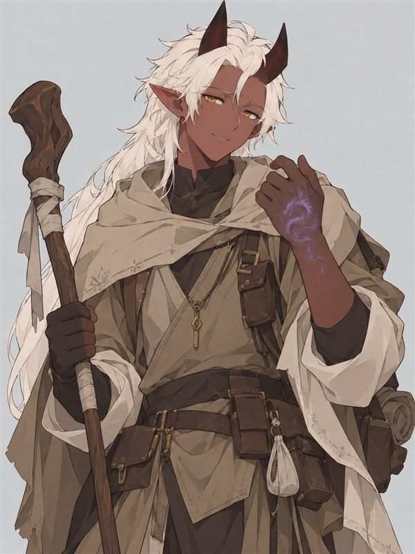
RQMA
黑膚金眼，頭髮白天白、夜晚黑。右手背的龍形紋身在情緒激動時發出紫光。溫和單純，看到綿羊和棉花就會被療癒，身邊總跟著牧羊犬蓋比。
專長 照顧綿羊、採集與製作棉製品
必殺技 閃耀治癒
目標 學會控制體內的黑暗力量
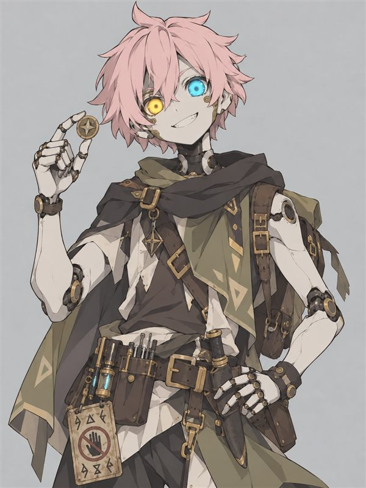
霸哥
櫻花粉髮、一黃一藍的機械眼。本該冷靜可靠，實際上坐沒坐相、嘴很欠，看到古代機關就手癢。醒來時身邊的文件寫著：「整天鑽漏洞，修也修不好，故將裝置休眠。」
專長 拆解機關、摸魚不被抓包
必殺技 這就很有意思囉
目標 繼續到處鑽漏洞
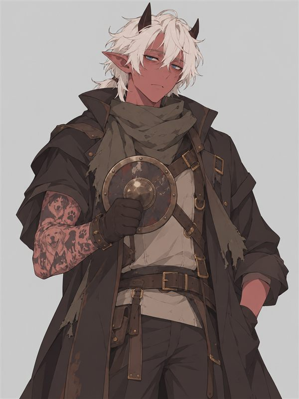
牛五花傑克森
瘦小的魔族，銀色亂髮、眼睛永遠半睜。整條手臂刺滿養過的狗。厭世、嘴上嫌麻煩，危險時卻默默擋在最前面，還說「只是剛好站在這裡」。
專長 狗控、厭世
必殺技 好盾好盾
目標 賺錢。沒有夢想，所以厭世
PROLOGUE序章 沙語綠洲
三個月前，一場大沙暴颳了七天七夜。風停的時候，沙丘底下露出一截斷掉的石頭迴廊，鏽蝕的符文在陽光下一閃一閃，像是有什麼東西剛剛睜開了眼睛。
從那之後，中央沙漠就不太平靜了。商隊說夜裡會聽見沙底下有嗡嗡聲；拾荒的人說，遺跡裡醒來的符文人一個接一個，多到不太正常。
而這些消息，最後全都流到同一個地方。
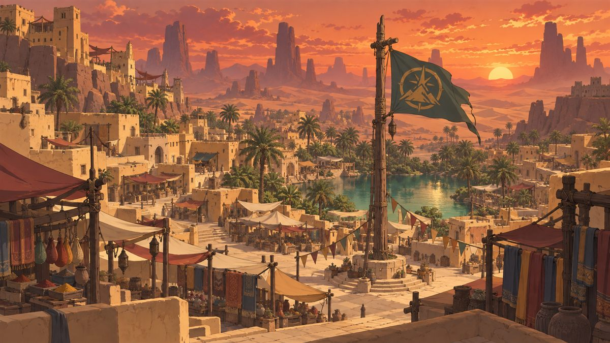
正午的太陽曬得泥磚牆都在冒熱氣。冒險者公會門口，一個小學徒踮起腳，在布告欄釘上一張墨水還沒乾的新委託：
「急徵護衛：協助商隊護送遺跡學者前往灰燼迴廊，並調查符文人甦醒事件。報酬從優。」
那一刻，有四個人同時看向了它。
對面屋頂的邊緣，一隻白頭海鵰模樣的鳥人收著翅膀，已經在那裡看了一整個早上。風從東南邊吹來，帶著一絲在綠洲很少見的鐵鏽味。天風瞇起藍色的眼睛——剛才小學徒釘委託的時候，底下有三個人同時轉過頭。他很好奇他們各自在想什麼。
水池邊的矮牆上，魔族神官 RQMA 捏著一團剛換來的沙漠棉，軟軟的，捏了一早上還捨不得放。牧羊犬蓋比趴在他腳邊吐舌頭。右手背上的龍形紋身今天特別安靜，可是他知道，它沒有真的睡著。
公會大廳角落，符文人霸哥整個人癱在長椅上，腳翹到桌上，手裡轉著一個不知道從哪拆下來的齒輪。櫃檯小姐已經瞪他三次了，可每次她抬頭，他都剛好坐得很正。
門口的陰影底下，牛五花傑克森把圍巾拉到鼻子，口袋裡的錢只夠再住兩晚旅店。他瞄了一眼報酬欄——麻煩，但數字不小。
就在這時，一陣帶著鐵鏽味的風吹過。蓋比猛地抬頭，耳朵往後貼，鼻子對著東南方的沙丘不停抽動。門口的流浪狗也在同一刻轉過頭，喉嚨裡發出很低的嗚咽。兩隻狗不認識彼此，反應卻一模一樣。
東南邊，就是那座遺跡的方向。
・・・
「很多像我一樣的傢伙醒來……那世界肯定完蛋了，哈哈哈！」
霸哥笑得太大聲，櫃檯小姐第四次抬起頭。而他已經坐得跟雕像一樣端正。
天風張開翅膀從屋頂滑下，走進大廳，靠在櫃檯邊。他看得出這位小姐不是真的在生氣，只是忙了一早上，累到快炸了。
「角落那位，大概是出廠設定就長那樣吧。」他笑著說，「別跟機器計較。」
櫃檯小姐愣了一下，噗哧笑出來。「好啦好啦，看在你的面子上。」她壓低聲音，「對了，你們要是對那張新委託有興趣，米拉小姐下午會來會客室。她一直在找會看符文的人……」她用下巴指了指角落，「那邊那個，剛好就是符文人喔。」
「欸不是，」霸哥從長椅上探出頭，「什麼出廠設定？搞什麼鬼啊？」
另一頭，門口傳來一聲完全不像同一個人發出來的聲音——
「嗚喔喔喔喔！哪裡來的好狗！好乖好乖好乖！」
蓋比不知何時跑出了水池邊，整顆頭埋進牛五花的外套裡。牛五花臉上的厭世一瞬間全部蒸發，兩手同時揉著兩顆狗頭，還捲起袖子，像在炫耀傳家寶：「你看，刺青上這些，都是我養過的狗唷。」
RQMA 追著自己的狗過來，視線被那條手臂吸了過去。一隻、兩隻……從手腕到肩膀，一共七隻。
「那些……都是你養過的狗嗎？」
「嗯。」
霸哥探頭到門外大喊：「RQMA，你被偷家啦，狗被人端走了！」
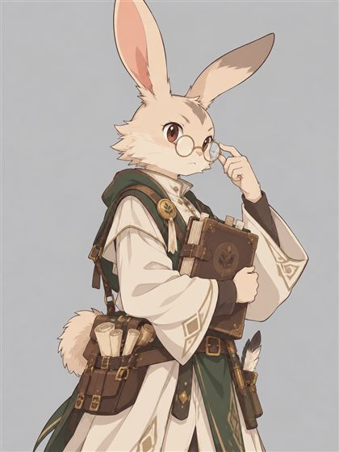
米拉 魔法學院派來的遺跡學者。一頭亂翹的捲毛、歪掉的黃銅眼鏡，講到遺跡就停不下來。
公會的門被砰地撞開。
「對不起對不起讓一讓！」一個抱著一大疊筆記的女人衝進來，眼鏡歪到一邊，捲毛亂得像剛被沙暴吹過。她一眼看見布告欄前的四個人，眼睛整個亮了，「你們——你們是來接委託的嗎？拜託說是！商隊後天就要出發，我到現在一個護衛都還沒找到！」
天風往前一步，笑咪咪的：「沒錯，在場四位都是來接委託的。不過妳也知道，急件可是要加收『委託費』的唷。」
米拉的手指在筆記本邊緣捏來捏去，咬了咬嘴唇，豁出去似地點頭：「好、好！每人再加 50，總共 350！學院那邊我再去吵經費！」
「欸欸欸，別擅自幫我決定。」牛五花舉起手，「我至少要看這委託有沒有狗，才能決定。」
米拉眨了眨眼，居然認真想了一下：「有！格倫隊長的商隊有一隻沙漠獵犬，叫『豆沙』，很大隻，很愛人摸！」
「好，有狗就沒問題了。」牛五花把手放下，「有豆沙又有蓋比，沒接過這麼豪華陣容的任務呢。這任務我接了。」
霸哥把委託單從頭看到尾：「又要緊急出發，又要會古代文字，一個人才 300，這價錢沒問題嗎？」
米拉的視線落到他那雙發光的機械眼上，整個人定住了。「……你、你是符文人？你看得懂符文語？」
「好像出廠設定就會了啦。」
她深吸一口氣，翻開筆記，指著一頁密密麻麻的數字，聲音壓得很低：「最近半年，這附近醒來的符文人，已經跟過去十年加起來一樣多。而且每一個身上都有差不多的殘留符文——我猜是某種『沉睡指令』。我讀不懂。」她抬頭看霸哥，「但你一定讀得懂。」
她說完，偷偷瞄了一眼他手肘的機械接縫。霸哥默默把手肘縮進披風裡：「多的資訊要收錢喔。」
・・・
出發前的兩天，四人把市場逛了一遍。
天風靠著三言兩語，讓雜貨鋪老闆給全隊打了八折，還把舊短弓折價換成一把鑲了金屬片的獵人長弓。霸哥換了淬火匕首，順便問老闆符文人專用機油能不能倒進皮水袋，老闆臉都綠了：「千萬不要！那袋子會臭一個月，你的隊友也會想殺了你！」
牛五花在狗店前想了很久，最後只買了一條肉乾，撕成小塊餵給門口那隻流浪狗。「要好好長大唷。裝備我是沒打算買。人死了就算了，狗可不能餓死。」
RQMA 則在市場最角落找到一位老製杖師。
「最強的杖？那就是這根。」老爺爺從布包裡抽出一根嵌著星銀絲線的法杖，天色越暗，銀線就越亮，「鎮店之寶，400。」
「我只剩 235……」RQMA 老實地說，「可以賒帳嗎？任務完成就回來還。」
老爺爺眯著眼看了他很久，看看他頭上的角，又看看腳邊坐得端端正正的蓋比，最後嘆了口氣，笑了出來。
「會帶狗出門的孩子，壞不到哪去。剩下 165，回來記得還啊，不然我就去公會找你。」
CHAPTER 1第一章 駝鈴與戒指
天還沒亮，沙漠冷得像冬天。南邊駱駝棚裡點著魔法燈，十幾頭駱駝噴著白氣。
牛五花是第一個到的。棚子最裡面趴著一隻大得誇張的沙色獵犬，站起來大概到他胸口。他才掏出狗零食，豆沙就把整顆頭塞進他懷裡，尾巴甩得旁邊的駱駝一直往後退。
好狗。今天這趟值得了。
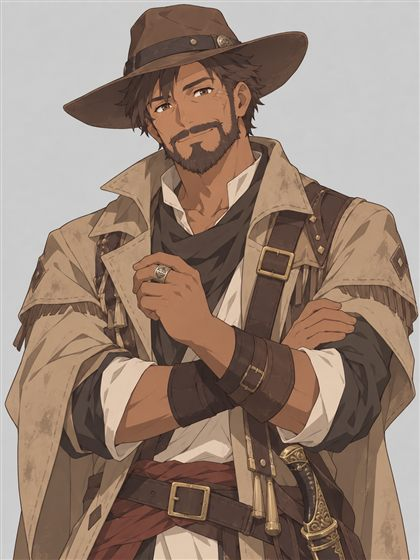
商隊隊長格倫 皮膚黝黑、鬍子整齊，笑容豪爽親切，看起來是個值得信賴的老江湖。
「這位就是格倫隊長！」米拉喘著氣介紹。
格倫笑著一一跟他們握手，手掌又厚又暖。「辛苦啦各位！有你們在，這趟我就放心了。水跟食物商隊包，你們只管幫我盯著沙丘就好。」
「隊長，東南邊好像有東西。」天風說，「我一直聞到鐵鏽味，狗也都對那個味道有反應。」
「遺跡嘛！整座都是生鏽的古董，風一吹當然有味道。」
格倫一邊說，一邊朝豆沙吹了聲口哨。天風的視線跟著落到狗身上——豆沙對誰都搖尾巴，唯獨格倫叫牠時，牠照樣走過去，尾巴卻垂得低低的，也不肯把頭湊上去。
「格倫隊長，你是做什麼的呀？」RQMA 問。
「跑商隊跑了快二十年囉！」格倫笑得眼角全是皺紋，「年輕時幫人當護衛，後來自己拉了一隊。這片沙漠哪裡有水、哪裡會塌，都在我腦子裡。」
他說話時，拇指一直在轉左手那枚戒指。
・・・
商隊在沙丘間走了一個早上。
牛五花趕上領頭的駱駝，半睜著眼睛說：「狗可不會騙人唷，隊長。要不要把你隱瞞的事講清楚？」
格倫愣了一下，接著笑得比剛才還大聲：「哈哈哈！你說豆沙不黏我啊？牠小時候偷吃貨，被我拿鞭子嚇過，記仇記到現在！」
他講得太自然，牛五花一時挑不出毛病。但從那之後，格倫看他的眼神客氣了很多——客氣到有點刻意。接著他朝後頭的駝夫喊：「前面改走岩谷那條，比較涼快！」
天風乾脆飛到格倫身旁，陪他聊天氣、聊路線。那張笑臉很熟練，但每隔一陣子就會瞄一下東邊的沙丘稜線，像在等什麼人。而那條「比較涼快」的岩谷路，天風從天上看過，又窄又繞，兩側全是高岩壁。
與此同時，說要「在篷車裡戒備」的霸哥，正躺在水桶中間翻著一枚兩面一樣的硬幣。他閒著無聊，伸手往底板下面摸——摸到一個用螺絲鎖死的黃銅小東西。
拳頭大，裡面有一顆魔動晶石，每隔一陣子就朝車外閃一下很淡的光。做工很新，零件卻是古代貨。
在沙漠裡，這種東西只有一個用途：告訴遠處的人，這台車現在在哪裡。
他把天風和牛五花拉到車邊，小聲說了底板下的事。接著又鑽回車底，用小螺絲起子撬開外殼，把閃光的節奏調慢了一點。
「這樣遠處的人一算，會以為商隊還在後面好一段路。」蓋子鎖回去時，他的藍眼亮了一下，「這就很有意思囉。」
牛五花找到坐在駱駝上翻筆記的米拉，壓低聲音：「雖然沒辦法跟妳說原因，但接下來隨時會出大事。隊長是一個會鞭狗的人——光這點就知道他絕對是壞人了。」
米拉張大了嘴，看看前面的格倫，又看看他，慢慢把筆記本抱緊。「……好、好，我會跟緊你們。」
「鞭子」這兩個字，一直在 RQMA 腦袋裡轉。他蹲下來把蓋比的耳朵揉了又揉，右手背的龍紋，隱約透出一點紫光。
天風振翅飛上岩壁頂端。從高處往下看，谷道中段兩側的岩棚上，趴著六、七個披沙色斗篷的人影，手裡的武器接著古代零件。他們全盯著谷道更深處的一個轉角，等著商隊走進去。
霸哥的手腳奏效了。他們算錯了位置。
CHAPTER 2第二章 岩谷伏擊
牛五花蹲在豆沙旁邊，小聲說：「待會馬上要打了。你有辦法的話就幫我咬死一隻，但你自己不要受傷。」又摸摸蓋比：「你躲起來就好。」蓋比鑽進了駱駝肚子底下。
RQMA 握緊星銀法杖，對著牛五花低聲唸起祝福禱詞。天風貼著岩壁滑到一塊突岩後方，拉開了長弓。
就在這時，谷道深處傳來一聲尖銳的哨音。
「不對！他們已經在谷口了！」
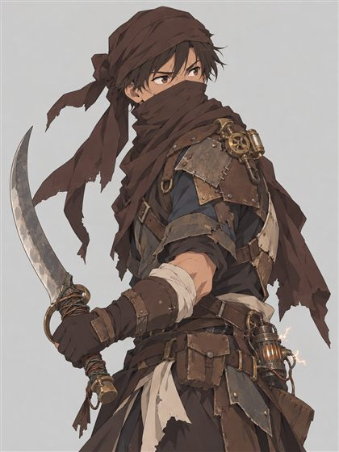
卡戎商會走私兵 七拼八湊的皮甲，改裝過古代零件的彎刀，一揮就會迸出電火花。
沙色斗篷一件接一件從岩棚翻落，改裝彎刀迸出藍白色的火花，四個人朝商隊衝來。駱駝嘶叫，米拉尖叫——
而格倫勒住韁繩，停在原地，一動也不動。
⚔ 戰鬥：岩谷之戰
牛五花一步踏到 RQMA 身前，舉起大盾。
「我只是剛好站在這裡。」
第一個走私兵的刀砍在盾緣上，擦過他的手臂。第二個走私兵的彎刀爆出一團電火花，牛五花的外套下擺燒了起來。
篷車頂上，霸哥一刀割斷繩結，整疊水桶轟然滾落，把衝來的走私兵撞得四腳朝天。另一個人跳上車頂朝他劈下，他一偏頭，刀子劈進了車架的木頭裡。
「這就很有意思囉！」霸哥咧嘴一笑，「你終於來到這裡了——現在你要面對的，是愛偷懶的霸哥！」
淬火匕首一個假動作騙開對方的刀，直接刺進肩膀。下一瞬，突岩上飛來一箭，正中那人胸口，他從車頂翻了下去，再也沒爬起來。
「牛五花，好盾！」霸哥還有空回頭喊。
牛五花身上的火還在燒，兩個走私兵一左一右咬著他的盾，刀子一次次從縫隙鑽進來。他沒退一步。
「快熟啦……」
RQMA 高舉聖印，一道清亮的光落在他身上，外套上的火「嘶」一聲全滅，連焦味都散了。
霸哥溜到 RQMA 旁邊，鼻子抽了抽：「怎麼有一股烤肉的香味？」
天風的下一箭射中走私兵的大腿——箭路卻刻意擦過格倫的帽簷，把那頂寬邊皮帽掀飛了出去。格倫慌忙抓住帽子，額頭都是汗，左手不自覺摸向了腰間的彎刀。
戰況越來越吃緊。兩把刀接連砍進牛五花的肩頭和腿，他膝蓋一軟，差點跪下——只剩兩口氣了。
RQMA 退到篷車後面，禱詞一字一字唸完。一道溫暖的光封住了牛五花的傷口，他又站直了。
天風搭上第三支箭，這次直直對準格倫的膝蓋。格倫猛拉韁繩，駱駝整隻人立起來，箭釘進了鞍座。
格倫從駱駝上翻身落地，拔出腰間那把「裝飾用」的彎刀。臉上的笑容，全不見了。
「……本來想讓你們死得舒服一點的。」
・・・
勁風箭帶著尖銳的風嘯，貫穿了格倫的右肩，把他推退兩步。他卻搆不到岩壁上的射手，轉身衝向篷車後面最好欺負的那個人。
刀鋒劃過 RQMA 的手臂。RQMA 咬著牙回身一杖，敲在另一個走私兵的太陽穴上，那人翻著白眼倒下。
格倫紅著眼，把彎刀反握，壓低身子開始蓄力。這一刀，是要拚命的。
「想幹嘛啊，隊長？這招我準備很久了。」牛五花撲向 RQMA——腳下卻被倒地的走私兵絆了一下。
盾牌只差半步。
反握的彎刀狠狠捅進 RQMA 的側腹。
RQMA 靠在篷車上往後退，想唸治療禱詞，痛得才唸兩個字就斷了。右手背上的龍紋，紫光一閃一閃地亮了起來。
「接著！」
天風從突岩上丟下一瓶治療藥水，「啪」一聲落進 RQMA 手裡。他一口氣灌下，臉色總算好看了一點。
牛五花一個箭步插進格倫和 RQMA 中間，長劍在格倫手臂上劃出一道口子。霸哥一刀了結了最後一個纏鬥的走私兵，悄悄溜到格倫的左後方——視線死角。
剩下那個走私兵看四個同伴倒了三個，把刀一扔，頭也不回地逃進岩谷深處。
只剩格倫一人。他喘著粗氣，眼睛瞄向谷口的駱駝。
他沒注意到，自己的靴帶和腰帶，早就被霸哥偷偷扣在篷車的輪軸上了。
天風甩下一條絆索纏住他的腳踝，一拉，格倫整個人撲倒在沙地上。他才撐起上半身，牛五花的大盾就橫掃過來，又把他拍回地上。
「別打了！別打了！我投降！」格倫雙手抱頭，「我只是拿錢辦事的！卡戎商會給的錢……你們放過我，我什麼都說！」
RQMA 的星銀法杖還是敲在他背上。他悶哼一聲，縮得更小了。
牛五花蹲下來，學著他剛才的口氣：「……本來想讓你們死得舒服一點的。」一邊說，一邊啪啪拍他的臉頰，「剛剛不是很囂張嗎？讓你感受一下狗被打的感覺。」
豆沙在一旁齜牙低吼，最後只是咬住格倫的褲管，用力往後扯。
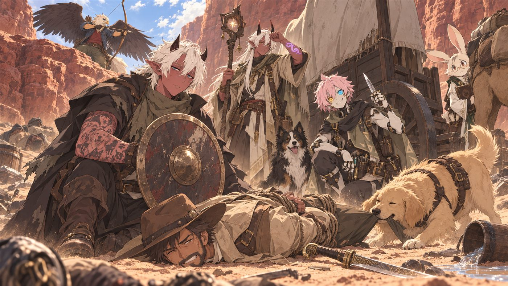
天風從突岩上滑下，一腳踢開沙地上的彎刀，拉弓對準他。「我怎麼知道你不是假投降？把實話說出來，不然這一箭就不是射帽子了。」
這一次，格倫的眼神不再飄了，也不再轉戒指了。他是真的怕了。
「我、我收了卡戎商會的錢……車底的閃光是我裝的，岩谷的路是我帶的……商會的頭子叫『鐵手卡戎』，手下在遺跡附近的沙丘挖東西，專收會發怪光的東西，說有大買家……」
霸哥蹲在旁邊翻他的口袋，一邊哼歌，一邊從靴筒裡抽出一把細匕首。刀刃上刻著一隻握著鑰匙的鐵手——跟格倫戒指內側、每個走私兵護肩上的記號，一模一樣。
牛五花和 RQMA 則在倒地的走私兵脖子上發現一塊殘破的護符。拿在手上，不冷也不熱，不像光明神殿的聖物，也不像蠻族的邪物。RQMA 靠近時，右手背的龍紋輕輕跳了一下。
米拉推了推眼鏡，聲音很小：「……這個氣息，跟那些剛醒來的符文人身上的刻紋，好像有點像。」
「大家沒意見的話，就先交給我保管吧。」牛五花把護符掛到脖子上，又轉頭，「欸，米拉，妳剛剛躲去哪了？」
米拉的臉一紅：「駱、駱駝肚子底下……跟蓋比一起。」
「確實，鞭子壞。」RQMA 蹲下去摸蓋比，牠卻一溜煙跑到逃兵丟下的背包邊，把頭埋進去翻，叼出一瓶藥水和一張皺巴巴的紙，得意地放到他手上。
是一張手繪地圖。灰燼迴廊入口東邊的大沙丘上畫著鐵手記號：「收貨處，晚上點燈。」遺跡最深處，潦草地寫著一行字：「會發光的東西，還挖不動。」
「契約當然還算數！」米拉深吸一口氣，把眼鏡推正，「報酬我回去一定幫你們再爭取。這些人想搶的東西就在裡面，我不想讓他們先拿到。」
格倫被兩個駝夫押回了綠洲。駝夫抓抓頭：「豆沙是格倫的狗……啊不對，現在沒主人了。」
豆沙走到牛五花腳邊，一屁股坐下，不走了。
牛五花低頭看著牠，沉默了很久，最後伸手揉亂了牠的頭毛。他的手臂上，大概會多一個刺青吧。
CHAPTER 3第三章 會呼吸的遺跡
太陽西斜時，商隊翻過了最後一座沙丘。
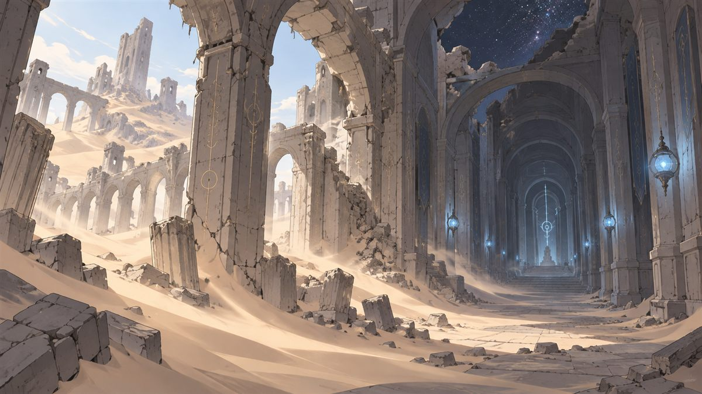
一截巨大的石頭迴廊從沙裡斜斜刺出，像一隻伸出地面的手臂。牆上爬滿鏽蝕的符文，一明一滅，節奏像在呼吸。塌了一半的大門縫裡，吹出一股帶著鐵鏽味的涼風——就是他們在綠洲聞到的那個味道。
米拉跳下駱駝，抱著筆記本的手在發抖，這次是興奮到發抖。「到了……就是這裡！」
霸哥從篷車裡探出頭。那一瞬間，他的藍色眼睛自己閃了一下——跟牆上的符文，剛好是同一拍。
・・・
夜裡，RQMA 攤開野外煮飯組合包，把豆子、醃肉和綠洲買的香料丟進鍋裡燉。香味很快蓋過了鐵鏽味，駝夫們一個個圍過來。蓋比坐得超端正，口水滴在沙上。他的頭髮隨著日落，慢慢從白變黑。
霸哥卻一直聽見一個聲音。說是聲音，更像有人在敲他的核心。他靜下心去聽——那是一段符文語，跟著牆上符文的節奏反覆發送：
「維護官呼叫。偵測到在外單位接近。請回報編號，前往紀錄室。」
「維護官？」他翻出那份一直帶在身上的古代文件，「……該不會就是把我強制關機的傢伙吧？」
文件上寫著：整天鑽漏洞，修也修不好，故將裝置休眠後放置於此。
米拉湊過來瞄了一眼，眼鏡差點掉下來。「這、這是維護紀錄的格式……霸哥，你搞不好就是從這種地方出廠的！」
「聽起來霸哥你有夠叛逆的。」牛五花嘆了口氣，朝豆沙招招手，看著牠的眼睛，「你以前的主人，常帶你去哪？」
豆沙一看到東邊沙丘上亮起的那盞淡燈，尾巴就夾了起來，低聲嗚咽。可牠還是往那個方向刨了幾下沙，刨出一條繞過稜線的小路。牛五花順手摸牠的後腿，摸到好幾道舊鞭痕。
RQMA 蹲下來，輕輕撫著那些鞭痕，低聲向旅人之神祈禱。手心透出一點溫暖的光。舊疤沒有消失，但豆沙一直繃著的後腿慢慢放鬆了，最後翻身露出肚子給他摸。
「米拉，」天風忽然開口，「妳跟格倫應該不是一夥的吧？」
米拉整個人僵住，接著拚命搖頭，捲毛亂飛。「不是不是！我要是知道，才不會躲到駱駝肚子底下！」
天風看得出來，她是真的被冤枉了。「躲起來不能代表什麼。不過妳看起來不像在說謊，希望妳別讓我們失望。」
・・・
天風帶著豆沙，沿著那條小路潛行到東邊沙丘。背風面挖出了一整片半埋的營地，帳篷和貨箱堆得像迷宮，大約十來個武裝的人。營地中間，一個右手裝著閃亮機械義肢的光頭壯漢正在怒吼：
「格倫那廢物沒回來，那個會發光的東西不能再拖了！明天天一亮，把炸藥和鑽機全搬進迴廊——挖不動就給我炸開！」
他把聽到的話帶回營地。米拉的臉一下子白了。
「炸開？！裡面的東西要是被炸壞……」她看了看天色，「天亮之前，我們只剩一個晚上。」
「看來今晚只能熬夜加班了。」牛五花長長嘆了一口氣，「米拉，妳有聽到關鍵字嗎？熬、夜、加、班。」
米拉心虛地推眼鏡：「加、加班費……我回去一起幫你們爭取！」
霸哥早就繞著塌門東敲西摸。大門右邊有塊牆石聲音不對，是空的。他撥開沙子，底下是一塊偽裝成石頭的金屬蓋板：
「維護通道・紀錄室直通・限符文人單位」
「這就很有意思囉。VIP 通道耶。」
感應孔的藍光從上到下掃過他。「單位確認。隨行人員：未登錄，拒絕通行。」
他嘖了一聲，撬開旁邊的小面板，把兩條線對調，再把自己的編號複製四份，貼進「隨行人員」欄位。感應器停了一拍——
「……確認。單位 ×5，通行。」
蓋板喀啦喀啦縮進牆裡，露出一條往下的窄階梯，兩側的符文燈一盞接一盞亮起。
「現在大家都是我。」
臨走前，霸哥又繞回正門，鬆了兩塊懸著的石頭、接上一條細線，再把一個半死不活的符文機關改成「有人踩進來就放電」。他退後兩步，欣賞自己的作品。
「非法之徒，請小心腳步。」
CHAPTER 4第四章 R-0913
階梯底下是一條乾淨得不像話的長廊，沒有一粒沙，彷彿三百年來一直有人在打掃。
「米拉，妳一直抓著那本筆記，」天風邊走邊說，「裡面就沒記點有用的東西嗎？該妳發揮作用了吧。」
米拉被他一激，立刻翻到折角的那頁。「這半年來我記了十幾個剛醒來的符文人。他們醒來的頭幾分鐘，都會用符文語重複同樣幾個詞——『回報』『紀錄室』『核心尚未平息』。過了幾分鐘就全忘了……我本來以為是故障，但現在……」她看向前方亮著的通道，「好像真的有人在叫他們回來。」
長廊盡頭是一間圓形的房間，牆上嵌滿一格格符文面板。房間中央的控制台前，站著一個背影。
那人影慢慢轉過身，頭頂的天線輕輕一震。
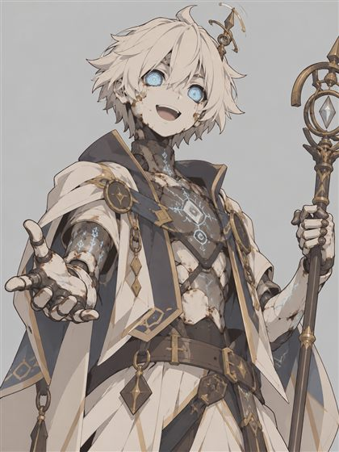
符文人維護官芬 在控制室運作了三百年的古老符文人，全身風化的刻紋，說話像在念報表。
淡藍色的光點掃過牛五花、RQMA、天風、米拉，最後停在霸哥臉上。停了很久很久。
「……單位編號 R-0913。」她的聲音平得像在念報表，「狀態紀錄：已封存。你為什麼醒著？」
「怎麼了霸哥，」牛五花說，「難道你之前都在睡嗎？」
「正確。」芬轉頭，「R-0913 本應持續休眠，直到另行通知。」她停了一下，「目前沒有另行通知。」
霸哥掏出一張皺巴巴的保固證明，在她面前晃了晃：「大概是過保了吧。感覺你們很會造東西，但不太會修耶。」
芬的天線震了一下：「保固期限：已逾期兩百九十七年。」
霸哥一邊說話，一邊想偷偷把背包外那塊「禁止觸碰」的古代標牌塞進去。手一滑，標牌掉下來，鏗、鏗、鏗，在光滑的地板上滾了三圈，剛好停在芬的腳邊。
芬低頭看了很久。
「本設施第三號密封門警告標牌。遺失紀錄……拆除者：R-0913。」她把標牌撿起來抱在懷裡，「紀錄更新：行為異常，未改善。」
另一頭傳來「啪」的一聲——RQMA 看某塊面板的符文亮得特別漂亮，伸手摸了一下，面板冒出火花，整塊暗掉了。
芬沒有回頭：「第七號面板離線。請勿觸碰。」
蓋比默默躲到了 RQMA 的腳後面。
天風往前一步：「妳有沒有想過，是狀態紀錄沒有更新？實際情形就擺在眼前，為什麼妳不信，卻要相信可能已經過時的紀錄？」
芬安靜了兩秒，天線嗡嗡震動。「……邏輯成立。紀錄與現況不符時，應以現況為準。」她轉向霸哥，「R-0913，狀態更新：甦醒。」
她又看回天風：「你是第一個糾正我的外部單位。」
・・・
「我也不知道我為什麼醒著啊。」霸哥攤手，「外面有群人想要裡面的東西，說天亮要炸開大門進來拿。什麼『核心』的，妳有頭緒嗎？」
聽到「炸開」，芬的藍光點縮了一下。「威脅等級上調。」
她一句一句說明：本設施深處封存著「核心」，所有符文人的設計用途，都是看守與維護它。沙暴後核心開始不穩定，她依照程序持續發送召回訊號。
「但被喚醒的單位一離開遺跡範圍，指令就會失效，記憶也會被清除。沒有一個回來報到。」她看著霸哥，「R-0913，你是三百年來第一個走進這間房間的。」
米拉在旁邊瘋狂抄筆記，筆都快冒煙了。
天風換了個輕鬆的語氣，好像什麼都知道：「守了三百年，很累吧。三百年前這裡應該出過什麼大事，才會讓妳一直守到現在？」
芬的天線猛地一震：「均衡實驗的失控不在本單位的權限內討論。」
話一出口，她整個人頓住了。兩秒後才改口：「……紀錄室的檔案有記載。」
天風看得出來——她不是不想說，是有什麼程序不准她自己說出口。
「那就看檔案。」他說，「你們的紀錄最後一次更新是什麼時候？規定這種東西，多少都有例外吧？」他瞪了米拉一眼，「米拉，說話啊，妳的研究總不是裝飾品吧。」
「對、對！紀錄是三百年前的，現在是緊急狀況！」
芬的天線震了好一陣子。「……紀錄最後更新：兩百九十八年前，更新者已全數失聯。例外條款第十四條：設施面臨外部破壞威脅，且無上級可請示時，現場維護官可授予臨時權限。」她看著天風，「條件……成立。」
牛五花解下脖子上的護符遞過去。芬的藍光才掃到一半，RQMA 右手背的龍紋突然亮起了紫光。
「實驗人員識別章，碎片。」芬的聲音第一次帶了一點遲疑，「掃描到第二個反應源……RQMA。與核心同源。」她偏著頭，「這股能量屬於善或惡，我無法判定。資料庫裡沒有這個分類。」
牛五花不動聲色，往 RQMA 身邊站了半步。
「R-0913 是什麼鬼，我叫霸哥好嗎。」霸哥碎碎念著，趁大家都盯著護符，悄悄繞到芬背後——她背上有一塊老式的維護艙口，鎖扣是舊款的，幾秒就能撬開。他身體裡記得：艙口一開，她就會進入「受檢模式」，暫時失去防禦。
芬完全沒發現他在看。她轉過身，停頓了很久。
「依例外條款第十四條，授予單位 R-0913……『霸哥』，臨時維護權限。」
牆邊的書架一格格彈開，最上層滑出一個黃銅封套。
・・・
芬念到一半就卡住了。「此段落……禁止本單位朗讀。」
霸哥乾脆把檔案搶過來自己念。
「三百年前，這裡在做『均衡實驗』……想把一種不算光明、也不算黑暗的力量聚起來，造出一個能『親自調停人族和蠻族』的東西。結果失控了，力量漏得到處都是，大家以為是汙染。蠻族就趁亂從南北一起打過來……」
他念著念著，聲音變小了。
「大破局，是從這裡開始的。」
米拉的筆掉到了地上。
霸哥往下翻，翻到印著自己編號的那一頁。
「單位 R-0913。搜尋效率為全體之冠，但會主動利用漏洞、無視指令。高風險，行為異常。處置：建議永久封存。」
頁尾還有一行手寫的小字，筆跡跟其他地方都不一樣：
「他找到的漏洞，全都是真的。也許我們才是需要被修好的那一方。」
霸哥盯著那行字看了一會兒，把檔案闔上，轉頭問：「芬，要不要我教妳怎麼偷懶？」
芬安靜了很久。「……此提案，暫時保留。」
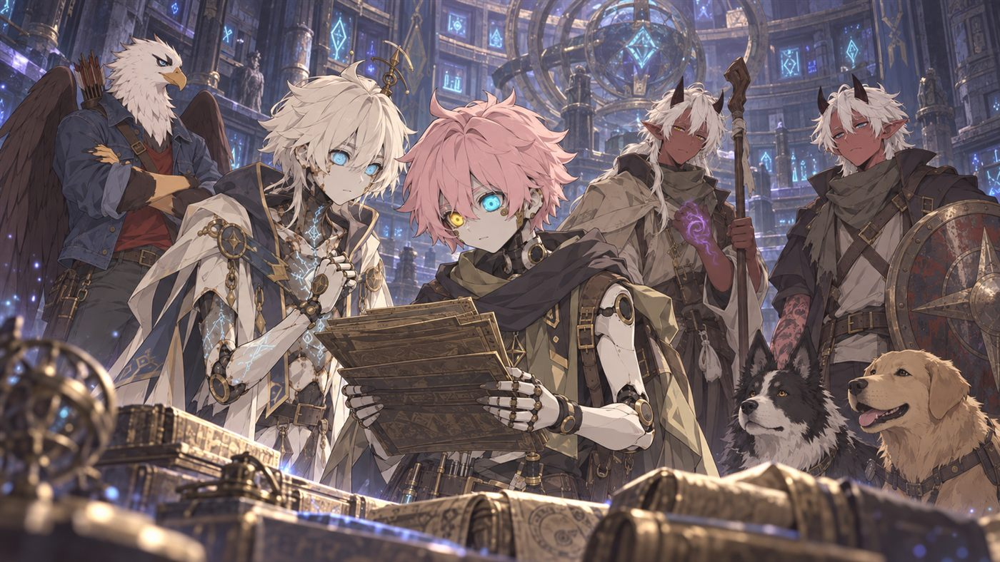
天風把腳環遞給芬掃描。「紋樣比對：協力紀錄中有相同圖案，註記為『天空觀測者』。詳細資料：缺損。」
牛五花用下巴指了指 RQMA：「芬，這個不知道是善是惡的東西，妳打算怎麼處理？」
「不處理。未分類不等於威脅。」芬停了一下，「但……不建議他靠近核心。核心會回應他。」
RQMA 看著自己的手背，慢慢說出以前的事：他曾經在一次任務中碰到上古的黑暗神器，從那之後，身體裡就有了這股力量。
「那件神器……跟這裡的核心，會不會是同一種東西？說不定，這就是我要找的，控制它的方法。」
芬比對了很久。
「確認。實驗外溢的力量被封存在各地的遺跡和神器裡。碰到的人，會沾上大量這種能量——現在的人叫它『汙穢』。」她看著他，「汙穢不是邪惡的標記，只是這個世界沒辦法分類的東西。如果你想學會控制它……答案在核心那裡。」
牛五花捲起袖子，把整條手臂的狗伸到芬面前：「妳也掃一下我的刺青嘛。我是不是也是什麼厲害人物？」
「墨水成分：普通。圖案：犬科，七隻。」芬停了一下，「另有極微弱的同源反應，跟 RQMA 相同，但淡很多。」
牛五花盯著自己的手臂：「……所以我不厲害，只是有點髒。」
RQMA 閉上眼睛，想順著龍紋的感覺，找找房間裡有沒有一樣的紋樣。感覺越來越強，強到手背一燙——紫光整個爆開。
地板深處傳來「咚」的一聲，像巨大的心跳。整間紀錄室的面板同時閃了一下。
芬猛地轉身：「核心活性上升！」她看著 RQMA，「……它知道你在這裡了。」
・・・
遠處，正門的方向，隱約傳來一聲悶響和咒罵。霸哥的機關被踩中了。天還沒亮，卡戎的人提早來了。
「有髒東西混進來了，大家注意。」霸哥鑽到控制台底下，摸到一組手動拉桿：防護隔板。拉下去能擋住入侵者，但也會封死正常的出路，之後只能往下走——往核心的方向。
長廊那頭傳來雜亂的腳步和粗啞的吼叫：「搜！那隻機器狗一定在裡面！」火把的光已經照到轉角。
芬站得筆直：「我的職務是守住核心。它剛剛被驚醒了，不穩定。」她停頓一下，「我請求與你們同行。你們……願意帶上我嗎？」
霸哥彈起硬幣，接住。正面。
「命運說拉。」
他一把拉下拉桿。轟的一聲，厚重的金屬隔板落下，剛好擋在衝過轉角的火把前面。另一邊傳來撞門聲和一串髒話。
「拉下隔板，帶芬去核心。」牛五花看了芬一眼，嘆口氣，「反正剛剛在沙漠已經多認養了一隻。」
芬偏著頭：「……我被分類為『一隻』？」
「嗯。」
「我投帶。」RQMA 把剛才閒著時打好的毛線小羊，塞進芬的手裡。芬低頭看了很久，把它收進了胸口的隔艙。
CHAPTER 5第五章 無名神的心跳
維護通道一路往下，越走越深，越走越安靜。
「芬，『天空觀測者』是什麼意思？」天風問。
「協力者。從高處監看沙底下的封存物，約定不下地面。詳細資料缺損。」
天風想起族人總說不下地面，是因為「傳統」。他沒說話，轉頭看向米拉：「格倫的事之後，妳就不太主動說話了。妳到底怎麼了？」
米拉停了一下，聲音很小。「我一直以為，研究古代文明是很浪漫的事……可是大破局，就是研究的人搞出來的。」她抱緊筆記本，「我怕我也在做一樣的事。」
牆上的符文燈從藍色，慢慢變成一種說不出名字的顏色。
最後，通道打開成一個巨大的空間。地面裂開一道深縫，縫的正上方，懸著一顆巨大的水晶。它一下一下地搏動著，跟紀錄室裡聽見的心跳一模一樣。光不刺眼，也不陰森，讓人說不出它是好的還是壞的。
RQMA 手背上的龍紋，一下一下跟著它亮。
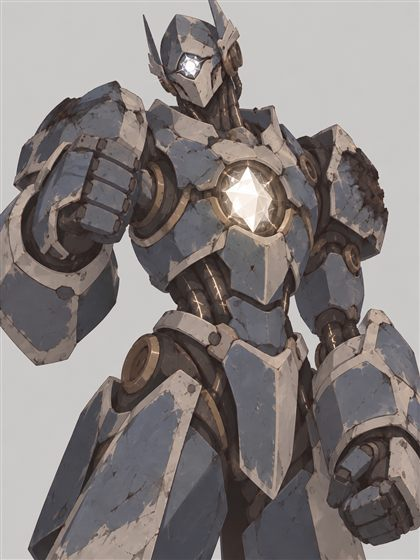
核心看守者 跪在核心下方的巨大機械守衛，胸口鑲著與核心同材質的水晶眼。只有一個指令：保護核心。
核心下方，一尊巨大的機械身影跪在裂縫旁。它胸口的水晶眼裡，有一點光，慢慢亮了起來。
「看守者……醒了。」芬低聲說。
「欸，照理說我們不算敵人吧？」霸哥歪著頭，「還是這東西也過保固了？」
「看守者的資料庫停在三百年前。R-0913 有登錄，所以它會把你認成本設施單位。」芬頓了頓，「……分類是『高風險』。」
「這就很有意思囉。」
「它只有一個指令：保護核心。」芬說，「帶炸藥進來的人，它會處理。站在核心旁邊的人……它也會處理。它不分陣營。」
天風轉向米拉：「浪漫這種事，不是自己賦予的嗎？現實跟想像不一樣，應該也不是第一次了吧。那妳打算怎麼辦？」
米拉愣住了。她低頭盯著筆記本看了很久，慢慢翻到空白的一頁。
「……把真相寫下來。」她的聲音還是很小，但已經不抖了，「當年的人把最後幾頁撕掉了。我不撕。」
牛五花嘆了口氣，拖著大盾往前走了幾步，剛好卡在看守者和大家中間。
「我只是剛好站在這裡。」
看守者的關節發出一陣長長的金屬摩擦聲，站了起來。它比牛五花高出三倍，巨大的護拳就垂在他頭頂上。
一道灰白色的光掃過整個密室，最後停在 RQMA 的手背上。一串低沉的嗶嗶聲響起，霸哥下意識翻譯出來：
「……『偵測到未分類反應源。與核心同源。說明來意。』」
RQMA 往前站了一步，把發光的手背高高舉起。
「我們不是來搶東西的。我們是來弄清楚這股力量是什麼，還有怎麼跟它好好相處。」他想了一下，又補一句，「而且我們有狗。我們是好人。」
蓋比很配合地「汪」了一聲。
看守者的水晶眼往下移，盯著蓋比看了很久。久到有點尷尬。
然後，懸在牛五花頭頂的護拳，慢慢、慢慢地放了下來。
「……『來意登錄。行為：無攻擊性。』」霸哥翻譯著，自己也有點傻眼，「……『附註：攜帶犬科。』」
・・・
「芬，剛剛我說妳是『一隻』，」牛五花搔搔頭，難得講得很認真，「是因為聽到外面在喊『機器狗』。他們說的機器狗是誰？如果那是在罵人……抱歉，我不是故意的。」
芬安靜了兩秒。「他們說的是 R-0913。」她偏過頭，「道歉已收錄。另外……『一隻』的分類，本單位不反對。」
霸哥盯著牛五花那條滿是狗的手臂，想了很久。「……所以，狗到底是不是好東西？」
「是。」牛五花、RQMA 和蓋比同時回答。
看守者轉過身，把水晶眼的光投向牆面。剝落模糊的壁畫一塊一塊浮現：四個光芒四射的身影，正把第五個灰色、看不出表情的身影，推出畫面中央的光環。
RQMA 掏出紙筆，飛快地把壁畫和邊緣的銘文描下來，連剝落的地方都畫上虛線。霸哥閉上眼睛，在記憶庫最底層翻出一段又破又舊的資料。他念前半，米拉對著描圖念後半：
「祂不屬於任何一方，所以每一方都容不下祂。我們想讓祂回來調停——」
米拉的聲音停住了。「……後面斷了。」
那顆核心，是一位被眾神聯手放逐、連名字都被抹去的神，殘存的神格。
遠處傳來「轟」的一聲，天花板落下一陣細沙。上面的隔板被炸開了。上方通道裡，腳步聲越來越近，夾著鐵器拖地的聲音：「鑽機跟上！」
霸哥落在最後，蹲在通道出口，把牆上兩根符文管線對調，再把一塊踏板的感應反過來接——誰踩上去，頭頂的通風閘就會「砰」地砸下，順便噴出一大團三百年份的灰。天風在機關前兩步，拉了一條腳踝高的細繩。先絆倒，再被砸，剛剛好。
回隊伍的路上，霸哥順手抽走 RQMA 的描圖，在無名神旁邊畫了三個圓滾滾的小齒輪，還幫其中一個加了張笑臉。
「妳明明有眼睛，實物就在那裡，」天風問米拉，「為什麼要看 RQMA 的描本？」
「因為實物剝落得太嚴重了……他連剝落的形狀都畫了，對照著看，缺的字才補得回來。」米拉翻給他看，然後眉頭一皺，「……這三個齒輪，是原本就有的嗎？」
霸哥吹起了口哨。
・・・
看守者往旁退開一步，讓出通往裂縫邊緣的路。
RQMA 走到核心面前。越靠近，空氣就越安靜，連腳步聲都好像被吞掉了。那股他一直拚命壓著的黑暗，第一次沒有往外衝，而是被輕輕地「拉」著，往核心流過去。
他聽不見聲音，但他感覺得到，它在問他一件事。
「它在回應你。」芬在身後低聲說，「你可以把它的力量拉進身體裡，那樣你會強到能壓住體內的一切——但核心會碎，這裡的一切也會一起停止。或者，你可以只是『讓它碰你』。不拿，也不壓。」她停了一下，「本單位不知道那會怎麼樣。」
牛五花靠在盾牌上，一手拎著兩條牽繩，看著 RQMA 走向那團光。「……唉，錢真難賺。」
RQMA 深吸一口氣，把手按了上去。
光一下子湧進來，湧進手臂、胸口、腦袋。他以為會很痛，但沒有。
他看見一片很大很大的草原，雲影慢慢滑過，羊群在吃草。那股他怕了很久的黑暗，就在草原底下，像地下水一樣安靜地流著。
他沒有被沖走。他還是他。
上方傳來「啪」一聲，一聲慘叫，「砰」的巨響，和一大串咳嗽。
「咳咳……給我繼續走！那顆會發光的，是我的！」
通道口炸開一團灰塵。一個光頭大漢撞開半倒的通風閘走進來，滿身都是三百年份的灰，右手的機械義肢發出低沉的嗡鳴。身後三個手下咳個不停，拖著鑽機，腰上掛滿炸藥。
鐵手卡戎看著 RQMA 手裡的光，眼睛都亮了。
「小子，」他咧開嘴，「那東西，放手交給我。」
RQMA 看著手心裡的光。
「……我鬆開。」
他張開手指。那股力量沒有離開，而是像潮水退回海裡那樣，輕輕地流回核心，只在他手背留下一條細細的連結。龍紋的紫光褪去，變成一種說不出名字的顏色，跟核心一模一樣。
核心的搏動慢了下來。
「……核心活性，」芬的天線豎得筆直，「恢復平衡。」
CHAPTER 6第六章 鐵手
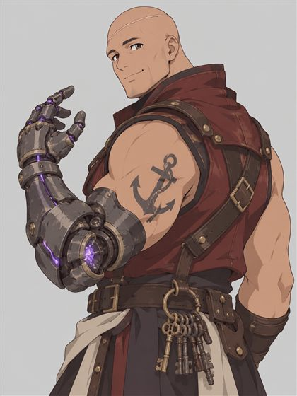
鐵手卡戎 卡戎商會頭目，右手是鑲著古代遺物的機械義肢，胸口嵌著一塊會發燙的遺物核心。
卡戎看著核心的光平靜下來，臉色一沉。
「……不給是吧？」義肢發出刺耳的嗡鳴，「那就搶！」
「看來敵人是這邊的。」牛五花把大盾往地上一頓，擋在 RQMA 和入口之間，拔出長劍。豆沙和蓋比壓低身子，對著入口低吼。
「米拉、芬，往後退，到升降井那邊去！」天風躍上一座石台，拉滿長弓。
⚔ 戰鬥：核心密室之戰
兩個手下丟下鑽機拔刀衝來。第三個剛把炸藥往地上一放，看守者的巨拳就砸了過去，逼得他連滾帶爬退回通道口。
牛五花用盾正面撞上衝在最前的走私兵，再補一劍，那人踉蹌著差點跪下。卡戎的義肢隨即轟下來——牛五花偏頭一閃，拳頭砸在地上，砸出一個坑。
石台上，勁風箭呼嘯而出，擦過卡戎的臉頰，削掉一大塊皮甲。他痛得退了半步。
霸哥的身影一晃，貼著義肢的縫隙劃了一刀，順便瞄見一件事——鑽機側面有一顆鏽得發紅的壓力閥。
他把匕首往閥門一撬。
嘶——砰！
一大團滾燙的蒸氣正面噴上卡戎，把他整個人掀翻在地。天風趁機一箭釘進他的膝蓋旁邊，卡戎痛得大罵一聲。
「給我……咳，給我記住！」卡戎用義肢撐著地爬起來，紫光比剛才更刺眼了。
另一邊，牛五花被兩個走私兵夾著砍，刀子一次次從盾緣鑽進來。RQMA 躲在他身後，輕聲祈禱，一層暖光落在盾牌上。
霸哥已經繞到卡戎背後的死角。
「這就很有意思囉！」
匕首整把捅進義肢與肩膀的接縫，卡戎痛得大吼，猛地轉身，義肢一記橫掃，結結實實砸在霸哥的側腹上。
RQMA 從牛五花旁邊探出身，星銀法杖「叩」一聲敲在走私兵頭上，打完馬上縮回去。那人捂著頭亂揮一刀——剛好從盾牌上方，狠狠劈中牛五花的肩膀。
・・・
卡戎的義肢突然發出尖銳的高鳴。紫光轉成刺眼的白，胸口鑲的那塊遺物燒得發紅，熱氣一陣陣往外冒。
他要放大招了。
天風射出一支拖著細繩的箭，繞住卡戎的腳踝一扯，他轟的一聲又摔倒——卻一把扯斷繩子，撐著發燙的義肢爬了起來。蓄的力，一點也沒散。
霸哥想戳義肢的散熱縫，被高溫燙得縮回手。
RQMA 再探身一杖，正中走私兵的腦門。那人翻著白眼倒下。
牛五花只剩一口氣，咬著牙把盾牌抬高，繼續擋在裂縫邊。
義肢的尖鳴越來越刺耳——
霸哥繞著卡戎打轉，一把扯住他腰間的鑰匙串。叮叮噹噹叮叮噹噹，吵得他完全沒辦法專心。
「遺物過載！」
義肢砸向地面，炸出一圈白熾的衝擊波。但這一拳偏了。牛五花和霸哥及時撲開，只被熱風擦過。
同一時刻，RQMA 高舉星銀法杖，閃耀治癒的光落在牛五花身上，他身上的傷口一口氣全部合攏。天風的箭射中最後一個手下的大腿，那人慘叫一聲，抱著腿倒下了。
・・・
只剩卡戎一人。義肢冒著白煙，他大口喘氣，胸口過熱的遺物「啪」地裂開一條細縫，一閃一閃地往外漏光。
他一把握住牛五花的劍身，硬生生扯過去，甩到五步外。牛五花手上只剩一面盾。
但那道裂縫，就是弱點。
霸哥一晃繞到正面，匕首狠狠插進發光的裂紋。遺物「滋」地爆出一團火花。
天風想像自己是邱比特，一箭正中同一個地方。卡戎胸口的光一下暗掉一大半。
牛五花掄圓了大盾橫掃過去，卡戎轟然倒地。他倒在地上還伸手想抓 RQMA 的腳踝當人質，卻被祝福之光一燙，抓了個空。
「等、等一下！我們談談……有話好說！」
「條件？」霸哥一腳踩在匕首柄上，刀刃又往遺物裡陷進去一截。胸口最後一點光，「啪」地熄了。
「你有什麼條件可以談？」天風一箭擦著他的光頭釘進地板，「還是想身上再多幾支箭？」
牛五花一屁股騎到他身上，一拳揍在他臉上，揍完甩了甩手。
「……痛的是我吧。」
卡戎的義肢「哐噹」一聲垂在地上，再也亮不起來了。他舉起那隻廢掉的機械手，啞著嗓子說：
「……我投降。別殺我。」
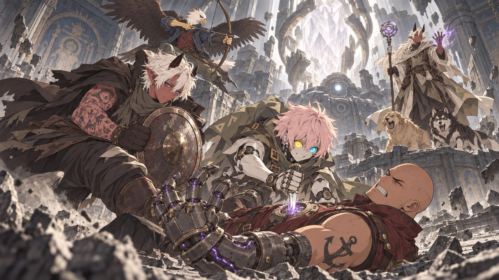
米拉和芬從升降井跑出來。米拉幫牛五花包紮肩膀，綁得歪歪扭扭，還打了個蝴蝶結。芬掃了一圈：「全員生命跡象穩定。R-0913 側腹外殼凹陷，建議之後敲回來。」
霸哥摸摸肚子上的凹痕，嘖了一聲。
他翻卡戎的皮甲時，從內袋摸出一封折得很整齊的信，封蠟是一個被鎖鍊纏住的黑色太陽。卡戎的臉一下子白了。
「原來是情書啊？」天風涼涼地說，「藏在胸口，嘴上說要談和，其實是想談感情吧。」
霸哥挑開封蠟念了起來。念著念著，語氣就不痞了。
「灰燼迴廊的發光物，無論完整或碎片，一律高價收購。此物能讓汙穢定向流動——只要量夠，就能讓普通人變成聽話、不怕痛、不會被神聖魔法傷到的士兵。」
「嘖，這種情書我可不收。」霸哥把信甩到卡戎臉上。
「我、我沒見過買家！」卡戎縮成一團，「只知道他給錢很大方……」
芬的天線豎得筆直。「三百年前的事，有人想再做一次。」
・・・
看守者拖著沉重的腳步走來。它沒有看卡戎，也沒有看那封信。它在 RQMA 面前停下，慢慢單膝跪下，胸口的水晶眼亮起柔和的光。
「大家一起走吧。」RQMA 笑著伸出手，「看守者、蓋比、豆沙……都是我的了。」
「你都有這麼多寵物了，」牛五花瞄了一眼，「蓋比就歸我吧。」
蓋比看看他，又看看 RQMA，一屁股坐到兩人中間，尾巴左右都甩。
RQMA 的指尖碰上水晶眼。整個密室的光暗了下來，一段畫面在所有人眼前展開——
三百年前。學者們圍著核心高喊：「只要祂回來，人族和蠻族就不必再打了！」核心的光越來越亮，然後失控，化成灰紫色的霧湧出遺跡，一路擴散到地平線。遠方的天空下，南北兩邊同時點起了蠻族的烽火。
最後一幕，是一位滿身是灰的老學者，把一枚識別章掰成兩半，對看守者說：
「別讓任何人把祂拿走。等一個不想拿走祂的人來。」
畫面散去。看守者輕輕把 RQMA 的手推回來，搖了搖巨大的頭，退回裂縫旁重新跪下。
「它說，它不能走。它要留在這裡陪祂。」芬低聲翻譯，看著 RQMA 手背那條細細的光，「……但它說，它等到了。」
CHAPTER 7第七章 握緊
升降井裡透下一絲很淡的晨光。天快亮了。
天風看著米拉，慢條斯理地說：「這次的工作量，抓內鬼、擋走私團、還順便拯救了一下世界。委託金，是不是該再加一筆？」
米拉扳著手指一件一件算，越算臉越紅。「……好、好啦！回綠洲以後尾款照付，每人再加一份危險津貼！」
天風又把兩個草藥包塞進芬手裡：「送妳。妳沒有拒絕的空間。」
「本單位不需要草藥。」芬停了一下，「……但接受。收進隔艙，放在小羊旁邊。」
「芬，現在想學怎麼偷懶了嗎？」霸哥塞給她兩條肉乾，「拿去餵那兩隻狗，會有很讚的回饋喔。」
芬遲疑地把肉乾遞出去。豆沙和蓋比一左一右撲上來，把她舔得滿臉都是口水。她整個人僵住了。
「……這就是偷懶？」
「這是第一課：放著別動，讓牠們舔。」
芬安靜了很久。「……偷懶提案，接受。」
「芬，事情都結束了，」牛五花問，「妳能不能解釋一下，天風到底是什麼人物？他腳上那個裝飾是什麼身分？」
芬重新掃描天風的腳環。核心穩定之後，資料多跳出了一行。
「天空觀測者裡，負責下到地面、把話傳給地上的人的，叫做『風語者』。」她看著天風，「……協力紀錄裡，最後一個風語者，是三百年前的事了。」
・・・
「芬，」RQMA 開口，「我可以把核心拿走嗎？」
芬轉過頭，很認真地看著他。
「可以。你是唯一能碰它的人。但它會碎掉，看守者會停止，這裡的一切都會結束。你會得到它全部的力量。」她停頓了一下，「或者，你讓它留在這裡繼續睡。你們之間的那條連結，還會在。」
看守者跪在裂縫邊，一動也不動，等著。
霸哥蹲下來，壓低聲音對兩隻狗說：「欸，你們主人現在好像想統治世界，要不要考慮換人跟？」
蓋比面無表情地看了他一眼，轉身，把屁股對著他坐下。豆沙學牠。
霸哥抬頭：「喂，你拿到力量之後，到底想幹嘛？」
「拿走。」RQMA 一點也沒猶豫，眼睛亮亮的，「我要高速採棉花。」
沒有人接得上話。
他把手按上核心。這一次，他握緊了。
光像瀑布一樣倒灌進手臂。這次不是草原，是暴風。他咬著牙撐住，手背的龍紋從紫色燒成白色，再燒成那種說不出名字的顏色，一路往上爬，爬過手腕、手肘，停在肩膀上。
他體內那股一直亂竄的黑暗，第一次乖乖地停下來，聽他的話。
喀啦。
核心的表面裂開了第一道縫。
「芬，」牛五花盯著越來越多的裂縫，「天空觀測者，跟這個拿走核心的傢伙有什麼關係？」
「觀測者從高處看著，是為了知道『有人把它拿走』的那一天。」芬轉頭看天風，「風語者要做的，就是把這件事告訴地面上的所有人。」
裂縫爬滿了整顆核心。看守者胸口的水晶眼一閃一閃，慢慢變暗。它抬起頭，最後看了 RQMA 一眼，然後像熄掉的燈一樣，靜靜地不動了。
密室開始震動，天花板落下沙子。
「這裡要結束了，妳的職務也是。」天風對芬說，「跟我們走。」
芬看了一眼跪著的看守者，又看了一眼胸口的隔艙——裡面有一隻毛線小羊和兩個草藥包。
「……職務變更，申請中。」她往升降平台走了一步，「批准。」
「你們學者真有那麼多經費？」天風轉頭問米拉，「還是妳也要跟 RQMA 一樣賒帳？」
米拉心虛地推了推歪掉的眼鏡——那顆黃銅螺絲早就被霸哥偷偷轉下來了。「……分、分期付款可以嗎？」
・・・
平台嘎吱嘎吱往上升。晨光一照到 RQMA，天風就看出來了。
他的頭髮原本白天是白的、晚上是黑的，現在卡在中間，變成一種灰色，而且不再變了。龍紋隨著他的呼吸一明一暗，節奏跟剛才碎掉的核心一模一樣。連井裡的風吹到他身邊，都會稍微往他那邊彎一下。
「芬，掃描他。」
芬的天線抖了好幾下。「汙穢反應……無法計數。分類：無。」她停了一下，「修正判定：他不是裝著這股力量的容器了。祂現在，就住在他身上。」
「我還以為那傢伙拿了核心會變成超人，」牛五花說，「結果看起來什麼事也沒發生啊。你們這三百年到底在忙什麼？」
芬很認真地想了一下。「本單位這三百年，負責等待。」她看看 RQMA，「……還有，什麼都沒發生，就是最好的結果。上一次，發生了大破局。」
牛五花嘆了一口氣。錢真難賺，世界也真難懂。
趁大家都在看 RQMA 的頭髮，霸哥用口袋裡的粉筆，在他背後畫了一條歪歪的皮鞭，旁邊寫上一個小小的「警告」。手法很乾淨，沒有人發現。只有蓋比轉頭看了他一眼，又默默轉回去，決定假裝沒看到。
這就很有意思囉。
平台衝出井口，陽光灑了 RQMA 滿臉。他說的第一句話是：
「我要去還製杖師的錢。」
一群人剛從崩塌的遺跡逃出來，腳底下的沙還在往下陷，他心裡想的是欠錢的事。米拉愣了很久，然後笑到眼鏡又歪了一點。
EPILOGUE後日談
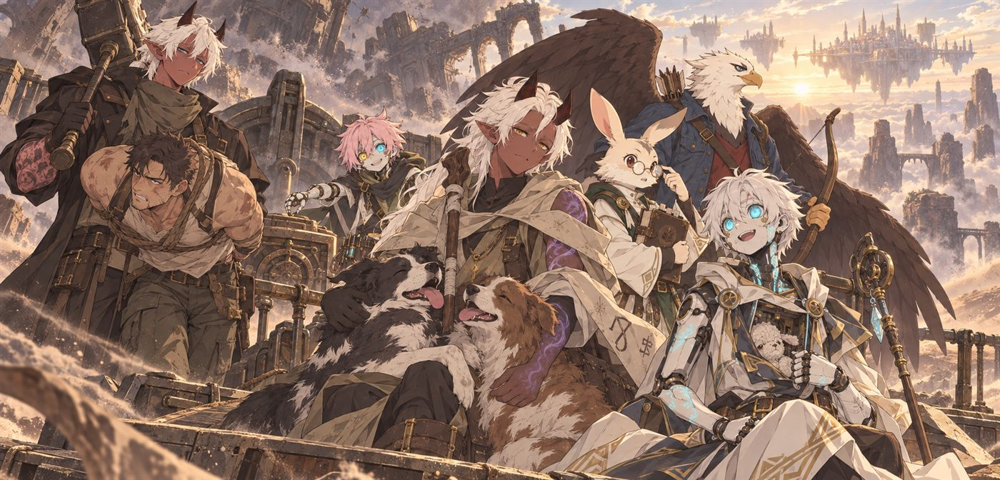
回到綠洲那天下午，RQMA 穿過整個市集，把 165 加梅爾放在老製杖師的攤子上。老頭數了兩遍，看看他的灰頭髮，又看看他背後那條皮鞭，什麼都沒問。
「你這孩子，氣色變好了。」
米拉照約定付了第一期報酬，剩下的「分期」。她沒有撕掉筆記的最後幾頁，把均衡實驗、大破局和無名神的事全寫進報告，寄往白塔城的魔法學院。學院到現在還沒回信。
卡戎被交給公會，黑太陽的信被收為證物。可那個被鎖鍊纏住的黑色太陽，後來又在燈籠港碼頭的一個貨箱上出現過一次。有人在找碎掉的核心——而他們很快就會知道，核心已經不在遺跡裡了。
芬的職務正式變更為「隨行維護官（偷懶實習中）」，現在會主動躺在地上讓狗舔。胸口的隔艙裡，除了毛線小羊和兩個草藥包，又多了一張霸哥畫的笑臉齒輪。霸哥還是到處鑽漏洞，口袋裡那顆符文齒輪偶爾會發熱——每次都是 RQMA 經過的時候。
牛五花最後沒得到蓋比。不過豆沙每天晚上都睡在他腳邊。他說那只是剛好，豆沙也只是剛好躺在那裡。
天風在綠洲最高的屋頂坐了一整夜。天亮時，遠方岩柱上的空中之城，三百年來第一次升起了灰色的風旗。那是給風語者的信號：
「回來。說給我們聽。」
他還沒決定要怎麼說。但他知道，這正是他下到地面想找的那種時刻。
至於 RQMA，他體內的黑暗再也沒有亂竄過。它很安靜、很聽話，偶爾在他摸到柔軟的棉花時輕輕發亮，像在打呼。沒有人知道，一位被遺忘的神住進一個牧羊的魔族神官身上，會帶來什麼。
不過聽說在南方的開拓村，最近有個灰頭髮的年輕人，一個早上就採完了一整片棉花田。
——結局：奪取均衡之力——